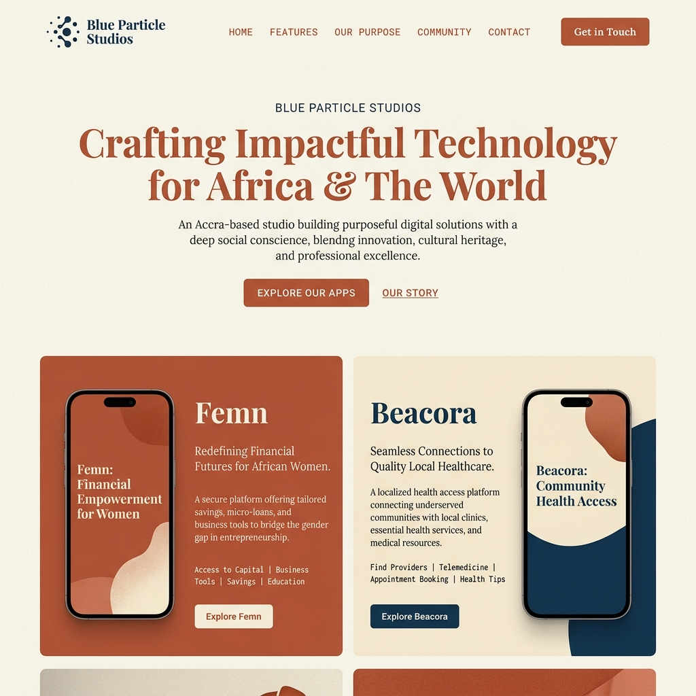

Blue Particle Studios; Building The Door

Every organisation eventually needs a door. A single place that announces what it is, what it believes, and what it is building clearly enough that the right people can find it and understand it in the time it takes to read a screen.
Blue Particle Studios had products in development, a coherent design system, a point of view about technology and its obligations to the people who use it. What it did not have was that door. The landing page was the project of building it.
The design was developed within the Warm Editorial system: terracotta and cream as the base palette, grain texture for tactility, Playfair Display in italic for the brand voice, Lora for body text, DM Mono for all interface labels. The aesthetic had been established through the portfolio site and refined through the product work. What this project required was not a new visual language but a narrative architecture the structure of how Blue Particle presents itself and its work to someone encountering it for the first time.
The position I arrived at is this: technology with a social conscience, built in Africa, for problems that actually matter here. That is not a marketing tagline. It is a claim about what kind of studio this is and what kind of products it builds. Every decision about the landing page what to include, what to leave out, how to sequence the information, how to describe the products was made in service of communicating that claim as clearly as possible.
Femn and Beacora are presented not as product features but as arguments. They are evidence of a methodology. Each one demonstrates that the studio's stated commitment to building technology that serves people rather than extracting from them is not rhetorical. It is operational.
Writing the landing page taught me that brand copy is a form of philosophical compression. The constraint of a screen and a few seconds of attention forces you to reduce a complex position to its most essential form. Every sentence I wrote, I tested against one question: is this actually true, or does it just sound like something a technology studio would say? Most of the first drafts failed that test. The final version is what survived.